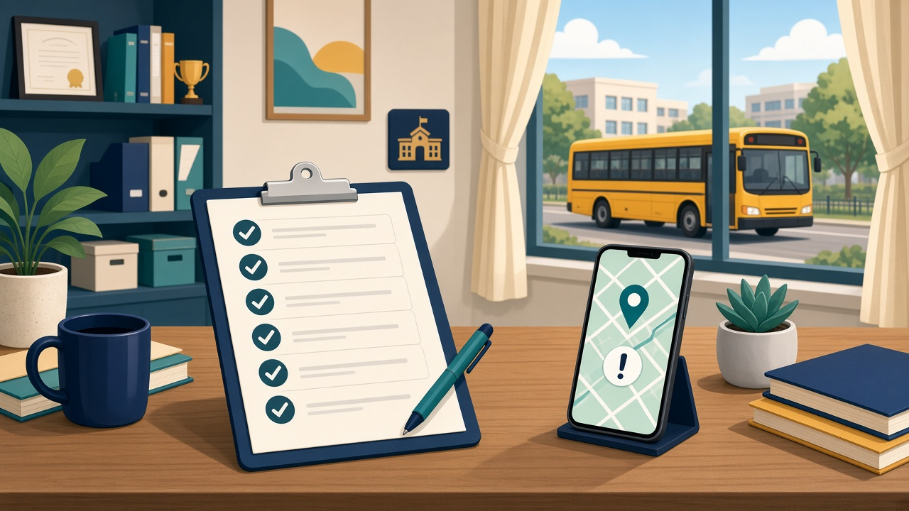

Short answer: A school transport safety checklist is a written ops policy principals can audit every term: fit drivers, a responsible attendant where you use one, clear authorised-pickup rules, a practised incident/delay drill, and one official channel for parent updates. Live vehicle visibility helps — but policy comes first. Use the numbered checklist below as a print-ready starting point for your transport committee.
Most schools already “have rules.” The gap shows up when a bus is late, a neighbour arrives instead of a parent, or the office phone rings mid-route. This guide is that ops gap: a checklist for your admin team, not a gadget pitch. For live maps and near-home alerts, see live school bus tracking — this post stays on policy.
Transport is a trust product. When policy is only verbal, three things go wrong:
A checklist does not replace state RTO rules or board expectations. It makes your school’s duties clear enough to train, audit, and improve.
Treat the driver as part of the school’s safety team, whether the bus is owned or contracted.
Keep on file and refresh on a fixed calendar: valid licence for the vehicle class (with an expiry diary), relevant driving experience, police/background verification before appointment, annual medical/vision check, traffic-offence review, uniform and ID, and a clear fitness-to-drive rule.
Add a short pre-trip checklist the driver signs: brakes, lights, first-aid kit, fire extinguisher, emergency exits clear, student list and emergency contacts on board. Keep copies for a term. If you use contracted buses, put the same expectations in the vendor agreement — “the contractor’s problem” is not a safety policy.
Where your school places an attendant (or conductor) on the bus — a common expectation for younger routes — write the role down.
Put these attendant duties in writing: mark boarding/alighting against the route list; help younger children board and leave safely; keep doors shut while moving; refuse unauthorised adults; hand children only to people on the authorised list; report issues to a named transport coordinator (not only a group chat); stay until the last handover and do a final walk-through so no child is left on board.
Nominate a transport coordinator who owns the day’s route sheet — driver, attendant, stops, and parent contacts. One named owner beats “someone in admin.”
This is the section parents feel most. Write it in plain language and send it as a structured notice parents must acknowledge — not as a PDF lost in a PTA group.
Core rules many Indian schools use:
Train attendants on “when in doubt, do not hand over.” A delayed child at school is safer than a wrong handover.
For self-dismissal of older students, say so explicitly by class/age, and still keep the route attendance record.
Write a one-page drill and practise it once a term with drivers, attendants, and the front desk.
Minimum drill script:
| Situation | First action | Who tells parents | What parents hear |
|---|---|---|---|
| Traffic delay > 15 minutes | Driver informs transport coordinator | Office / coordinator via official channel | Route delayed; estimated new time if known |
| Breakdown / mechanical stop | Move children to safety; call coordinator | Office | Bus stopped; alternate arrangement |
| Medical concern on board | Attendant + driver follow first-aid + emergency numbers | Office (and emergency services as needed) | Fact-based update; no speculation in groups |
| Missing child at boarding | Stop the bus process; check list; alert coordinator immediately | Office to parent at once | Exact status and next step |
Rules of the drill:
This is where structured school-parent communication matters: alert and announcement message types with a clear next step, not a 40-message thread.
Transport anxiety loves group chat. A school parent engagement platform keeps updates official and per-child.
Prefer route or school-wide alerts for delays; notices parents must acknowledge (pickup rules, new attendant, revised stop); approval flows for a temporary pickup person; and keeping transport talk out of academic PTA threads.
Avoid drivers sharing location pins into parent groups, using class groups as the escalation path, and verbal-only pickup authorisations.
ConnectEdu’s parent messages can carry a purpose — announcement, acknowledge, approve, payment request, alert event, or reply — so the office sees who responded.
Policy decides who may collect a child and who speaks for the school. Software reduces the information gap that turns every delay into panic.
ConnectEdu is a school management system and parent engagement stack: web for school teams; Android and iPhone apps for parents, teachers, and drivers. On transport, verified capabilities include:
For the map-and-alert detail, read live school bus tracking. This checklist post is intentionally not about ranking for “bus tracking” phrases — that article already owns that job. Use tracking to support the drill above, not as a substitute for authorised handover and staff checks.
For desk questions in the morning rush, ConnectEdu’s Admin AI Agent answers from live school data via secure database queries (any language in; English out). Today that is search and answers only — not reminders or messages to families. Parent-facing bus and safety updates still run through transport and communication modules.
Use this as a termly audit. Tick what is true today; assign an owner and date for every blank.
If you cannot tick most of A–D, start there before buying another gadget.
People checks (driver licence, verification, medical fitness; attendant duties), vehicle/trip checks (pre-trip, emergency kit, final walk-through), authorised pickup and handover rules, a written incident/delay drill with one official parent channel, and — if you use it — live visibility in the parent app that supports those rules.
Only parents/guardians or adults on the school's authorised pickup list, following your ID and notice rules. Temporary changes should be approved through the office or official app before the run, not arranged as a last-minute WhatsApp message to the driver.
Many schools place an attendant on routes with younger children, and some local or board-linked expectations push in that direction. Put your school's rule in writing by age/route, train the attendant on handover, and name a transport coordinator who owns the day's list.
Through one official school channel — ideally the same parent app used for attendance and notices — with a clear status and next update time. Avoid relying on class WhatsApp groups or calling every parent from the driver's phone mid-route.
No. Live tracking, geofence alerts, and delay notices reduce "where is the bus?" anxiety and help the office triage. They do not decide who may collect a child, who is fit to drive, or who speaks for the school in an incident. Policy first; visibility second.
Print the checklist, fill it with your transport coordinator this week, and schedule one delay drill before the next termly review. If you also want live vehicle progress, geofence alerts, and delay notices inside the same parent app as attendance and fees, book a 30-minute ConnectEdu school demo or write to hello@inraylabs.com.